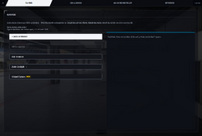

OmegaSim Wiki – die Idee dazu stammt von Gnen54. Hier stehen die offenen Artikel von Nutzer Luuke42 unter der Lizenz CC BY-SA 4.0.
Virtuelles Fahren
Stand dieses Artikels: OmegaSim 1.2.9 vom 26.10.2026 · Firmware des Autos: nicht bekannt (OmegaSim liest die Firmware-Version nicht aus)
Dieser Text wurde mithilfe von KI erstellt (Claude) und ist nicht in jedem Punkt von Menschen geprüft. Fehler bitte direkt verbessern oder auf der Diskussionsseite melden, siehe Mitmachen. Die öffentliche Fassung auf luuke42.github.io/omegasim kann älter sein als der hier beschriebene Stand.


Virtuelles Fahren (in der App „Virtuell fahren“, in Arbeit) ist ein Modus von OmegaSim, in dem ein simuliertes Auto ohne Bluetooth-Verbindung in einer 3D-Ansicht über die Strecke aus dem Strecken- und Raum-Editor fährt. Das virtuelle Auto ist für die App ein gewöhnliches Garagenauto, das sich seine Funkmeldungen selbst erzeugt; dadurch laufen Rundenzeit, Rennen, Telemetrie und Motorklang unverändert mit. Gefahren wird mit dem Tempo des gewählten Fahrgefühls und einem Querdynamikmodell nach dem Vorbild eines GT3-Rennwagens. Verwandt, aber getrennt davon ist Rennen simulieren: Dort fahren NPC-Attrappen ohne Hardware mit der echten NPC-Steuerung (siehe NPC-Fahrverhalten); beides wird auf dieser Seite beschrieben, weil beide Autos ohne Carrera HYBRID-Hardware bewegen.
Auf einen Blick
| Merkmal | Wert |
|---|---|
| Menüpfad | FAHREN → Autos → Garage, ganz unten Virtuell fahren (Optionen rechts, dann Losfahren); Rennsimulation: Optionen → NPCs → Rennen simulieren |
| Wichtigste Optionen (Standard) | Auto: Vulture V5.R · Schaltung: Automatik · Handling: GT3 · Geist folgt meiner Linie: an · NPCs: 3 · Neigung sichtbar: 1× · Motorsound: Motor des gewählten Autos |
| Status | in Arbeit (WIP-Zeichen im Bild); Rennsimulation experimentell |
| Seit Version | 1.1.3 (Grundmodus), 1.1.9 (Speed-Dreams-Auto), 1.1.11 (direkte Lenkung, Kameras), 1.1.46 (virtuelle NPCs), 1.1.52 (Handling „Schnell“) |
| Beteiligte Quelldateien | src/60d-virtuell.js (virtuelle Fahrt), src/90b-sim.js (Rennen simulieren), src/60-track.js (Mittellinie, Maße, Fahrzeugmaße), src/40-physics.js (Fahrzeugmodell), src/51-konsole.js (Tasten), src/90-ghosts.js (Rollen, onCarNotify)
|
Grundlagen
Simulation mit festem Takt
Eine Simulation rechnet die Welt nicht stetig, sondern in kleinen Zeitschritten dt: Aus Ort und Tempo jetzt wird Ort und Tempo nach dt. Je kleiner dt, desto genauer, aber desto mehr Rechenarbeit. OmegaSim nutzt mehrere Takte nebeneinander:
- den Meldetakt von 45 ms, in dem auch ein echtes Auto seine Meldungen schickt,
- den Bildtakt des Browsers (meist 60 Bilder je Sekunde, also etwa 16 ms), in dem das Auto bewegt und gezeichnet wird,
- einen Feintakt von 2 ms innerhalb des Reifenmodells, weil die Reifenkräfte bei größeren Schritten schwingen würden.
Koordinaten und Transformation
Die Strecke liegt in einem ebenen Koordinatensystem mit x und y in „Streckeneinheiten“: Eine 43 cm lange Gerade ist 40 Einheiten lang, also 0,930 Einheiten je Zentimeter. Die Fahrtrichtung ist ein Winkel h in Grad. Für die 3D-Ansicht wird jeder Punkt mit Matrizen umgerechnet (Transformation): erst an die Stelle und Drehung des Autos, dann in den Blick der Kamera, dann perspektivisch auf den Bildschirm.
Einspurmodell
Das Einspurmodell (auch Fahrradmodell) fasst die beiden Räder einer Achse zu einem zusammen. Mit Radstand L, Radeinschlag δ und Tempo v dreht sich das Auto mit der Gierrate ω = v · tan(δ) / L. Mehr Querkraft, als die Reifen übertragen können, gibt es nicht: Dann rutscht das Auto.
Reifenmodell nach Pacejka
Die Magic Formula von Hans Pacejka (von Grund auf erklärt im Artikel Pacejka) beschreibt, wie viel Seitenkraft ein Reifen bei einem bestimmten Schräglaufwinkel α (Winkel zwischen Laufrichtung und Blickrichtung des Rads) überträgt. Die vereinfachte Form lautet F = D · sin(C · arctan(B · α)): Bei kleinem α steigt die Kraft fast linear, erreicht ein Maximum D und fällt dann leicht ab. Ein Reibkreis teilt die Haftung zwischen Bremsen/Antreiben und Kurvenkraft auf: Wer voll bremst, hat weniger Seitenhalt. Mehr dazu unter Fahrverhalten.
WebGL
WebGL ist die Schnittstelle des Browsers, mit der Programme die Grafikkarte nutzen. OmegaSim bringt dafür einen eigenen, kleinen Zeichner mit, ohne fremde Bibliothek (zum Aufbau der App siehe Aufbau von OmegaSim).
Kollisionsprüfung
Die Rennsimulation prüft Berührungen mit einem einfachen Rechteckvergleich: Zwei Autos berühren sich, wenn sie in Längsrichtung näher als eine Autolänge und quer näher als eine Autobreite beieinander sind. Das ist grob, aber schnell und für eine Zählung ausreichend.
Bedienung
- Unter FAHREN → Autos → Garage ganz unten auf Virtuell fahren tippen. Rechts erscheinen die Optionen.
- Optionen nach Wunsch einstellen (Tabelle unten). Eine Zeile zeigt, ob die Motoraufnahme spielt, lädt oder fehlt.
- Renntyp unter Renneinstellungen wählen, falls gewünscht (Training, Runden, Endurance oder Qualifying).
- Losfahren drücken. Das Auto steht eine halbe Kachel vor Start/Ziel; die Ansicht wechselt ins Cockpit mit der 3D-Schicht darüber.
- Fahren mit Gamepad, Tastatur oder Pfeiltasten wie mit einem echten Auto.
- Beenden mit dem Knopf ✕, mit Escape oder mit Options am Controller. Danach geht es zurück in die Garage.
Tasten in der virtuellen Fahrt:
| Aktion | Bedienung |
|---|---|
| Kamera weiterschalten (Verfolger, nah, Motorhaube, von oben, statisch) | Lichthupen-Belegung (Standard R3) oder Taste C |
| Licht an/aus | Knopf Licht oder die Scheinwerfer-Belegung (Standard Dreieck) |
| Auf die Bahn zurücksetzen | Knopf Zurücksetzen |
| Fahrt beenden | ✕, Escape oder Options |
Rennen simulieren:
- Optionen → NPCs → Rennen simulieren aufklappen.
- Anzahl NPCs (2–6) und Runden (1, 2, 3, 5, 10) wählen, bei Bedarf Doppelte Geschwindigkeit.
- Simulation starten. Auf der Karte wandern die Punkte, darunter steht eine Zeitentabelle. Abbrechen beendet vorzeitig.
Einstellungen
Die Optionen der virtuellen Fahrt werden je Gerät im Browser gespeichert.
| Name in der App | Werte | Standard | Wirkung laut Code | Schlüssel |
|---|---|---|---|---|
| Motorsound | „Wie in Optionen“ oder jeder Motor aus Optionen → Ton | Motor des gewählten Autos (V5.R → sd_v5r, Lynx → sd_lynx …) |
startet die Aufnahme beim Losfahren, beim Beenden kommt der vorherige Motor zurück | omegasim-vf-motor
|
| Auto | Vulture V5.R, Lynx 220, FMC GT4, Boxer 96, Einfaches Modell | Vulture V5.R | 3D-Modell und Fahrdaten (Masse, Schwerpunkt, Radstand, Einschlag, Bremsbalance, Abtrieb) aus Speed Dreams; „Einfaches Modell“ ist ein Kasten mit GT3-Grundwerten | omegasim-vf-auto
|
| Schaltung | Automatik, Manuell | Automatik | setzt autoShift des Fahrzeugmodells für die Dauer der Fahrt |
omegasim-vf-schaltung
|
| Handling | GT3, Schnell | GT3 | Schnell: Griff vorn und hinten × 1,35, Lenkeinschlag × 1,5 (höchstens 45°), Gierdämpfung × 0,6, Tempo × 1,15 | omegasim-vf-handling
|
| Geist folgt meiner Linie | an, aus | an | zeichnet die erste Runde auf und spielt sie ab der zweiten als hellblaues Auto ab | omegasim-vf-geist
|
| NPCs | aus, 1, 2, 3 | 3 | virtuelle Mitfahrer auf der Mittellinie (keine echte NPC-Logik) | omegasim-vf-npc
|
| Neigung sichtbar | 1×, 2×, 3×, 5×, 8× | 1× | vergrößert nur den sichtbaren Federweg, nicht das Fahrverhalten; fehlt beim einfachen Modell | omegasim-vf-feder
|
| Kamera (über Taste) | Verfolger, nah, Motorhaube, von oben, statisch | Verfolger | wird gemerkt | omegasim-vf-kamera
|
Für Rennen simulieren gelten die drei Felder Anzahl NPCs (sim-ghosts, Standard 4), Anzahl Runden (sim-laps, Standard 3) und Doppelte Geschwindigkeit (sim-fast, aus), dazu alle NPC-Regler.
Funktionsweise
Das Garagenauto ohne Funk
virtuellStarten() baut ein Auto-Objekt mit der Kennung virtuell, dessen Sendekanal eine Attrappe ist, die nichts tut, legt es in die Garage und gibt ihm die Rolle Spieler 1.[1] Ein verbundenes echtes Fahrerauto bekommt für die Dauer die Rolle „Aus“. Außerdem stellt die App die Leseart auf „Bahn“, merkt sich Strecke, Schaltung und Motor und stellt alles beim Beenden wieder her. Voraussetzungen: ein Fahrgefühl mit Physik (mit RC erscheint „Virtuell braucht ein Fahrgefühl mit Physik (nicht RC)“) und WebGL.
Strecke. Liegt im Editor eine Strecke mit mindestens drei Teilen, wird sie gefahren, sonst die Challenge-Strecke Balkonia; die Editor-Strecke wird beim Beenden zurückgesetzt. Aus den Teilen entsteht die Mittellinie mit 14 Abtastpunkten je Teil und den Normalen (Querrichtungen), daraus Fahrbahn (25 cm breit), Randsteine (links blau-weiß, rechts rot-weiß) und Teilegrenzen.
Renntypen. Übernommen werden Training, Runden, Endurance und Qualifying; andere Renntypen fallen mit einem Hinweis auf Training zurück. Bei „Runden“ endet die Fahrt nach der eingestellten Rundenzahl, bei den Zeitrennen nach der eingestellten Minutenzahl, jeweils 1,6 s nach der Meldung „Rennen beendet“.
Die Meldungen im 45-ms-Takt
vfPaket() läuft alle 45 ms (VF_TAKT_MS) und baut ein 19-Byte-Paket, wie es ein echtes Auto meldet, und gibt es an onCarNotify(), also an dieselbe Stelle, an der echte Funkmeldungen ankommen:[2]
// src/60d-virtuell.js, vfPaket() (gekürzt)
const b = new Uint8Array(19);
b[0] = 0xaf; b[2] = 0x9c; b[10] = 100;
b[11] = VF.zaehler; // Kachelzähler, +1 je neues Teil
b[12] = VF.abseits ? TILE_OFFTRACK // 0x00 neben der Bahn
: vfCode(VF.tiles[tile].type); // Teilecode (Start/Ziel 0x01 auf der Bahn)
b[15] = VF.abseits ? 0 : 0x08;
onCarNotify(VF.car, { target: { value: new DataView(b.buffer) } });
Der Zähler springt, sobald der nächste Abtastpunkt der Mittellinie zu einem anderen Teil gehört, und läuft modulo 256 (& 0xff). Überfährt das Auto auf der Bahn ein Start/Ziel-Teil, zählt vfPaket zusätzlich eine eigene Runde für die Anzeige im Bild, das Geisterauto und das Rundenende. Rundenzeit, Sektoren, Rangliste und Telemetrie kommen dagegen aus der normalen Auswertung der Meldungen. Teilecodes: Start/Ziel wird zum Bahn-Startcode, Box zu 0x07, Engstelle zu 0x0a, alle anderen behalten ihren Typcode.
Bewegung je Bild
vfBild() läuft je Bild mit dt = Zeit seit dem letzten Bild, höchstens 0,05 s. Die Schritte:
- Tempo aus dem Fahrzeugmodell des Fahrgefühls: kmh = physEngine.speedKmh × Tempofaktor (1,0 bei GT3, 1,15 bei „Schnell“). Das ist das Modelltempo (Vollgas etwa 4 km/h), das mit REAL_SCALE = 73,75 auf die angezeigten Rennwagen-km/h umgerechnet wird.
- Lenkung direkt vom Stick, nicht über die Servodämpfung des echten Autos:
v_GT3 = |kmh| × 73,75 / 3,6 (m/s eines GT3) Lenk_Ziel = Stick / (1 + (v_GT3 / 55)²) Lenk = Lenk_alt ± höchstens dt / 0,09
- Von der Mitte auf vollen Einschlag dauert es also 0,09 s (der Kommentar im Code und die Patchnotes nennen 0,12 s; es gilt der Code). Bei hohem Tempo wird der Einschlag wie bei einem Spiel-Lenkfilter verkleinert.
- Querdynamik: vorwärts mit
vfDynamik()(nächster Abschnitt), rückwärts rein kinematisch mit dem EinspurmodellvfSchritt(). - Ort weiterschreiben, mit Schwimmwinkel β = atan2(v_quer, v_längs):
v_E = kmh / 3,6 × 100 × 0,930 (Streckeneinheiten je Sekunde) h = h + r × dt × 180/π (r = Gierrate in rad/s) x = x + sin(h + β) × v_E × dt y = y − cos(h + β) × v_E × dt
- Bahnbezug (
vfOrt()): Unter den Abtastpunkten von 12 hinter bis 40 vor dem letzten wird der nächste gesucht; seine Normale ergibt den Querabstand q. - Neben der Bahn, wenn |q| > TRACK_HALF_W × 1,19 + Autobreite × 0,3 = 11,63 × 1,19 + 4,4 × 0,3 ≈ 15,2 Einheiten (rund 16 cm von der Mitte). Dann fällt das Modelltempo mit e^(−3·dt) je Bild, der Griff sinkt auf 55 %, das Auto rüttelt, das Paket meldet
0x00; nach 2,5 s daneben wird es auf den nächsten Punkt der Mittellinie zurückgesetzt, mit Tempo 0. - Geist, NPCs, Federung weiterrechnen, dann zeichnen.
Weil das Tempo aus dem Fahrzeugmodell der App stammt, fährt die virtuelle Fahrt mit denselben Gängen, Drehzahlen, dem Tank und dem Verschleiß wie ein echtes Auto; nur die Richtung rechnet 60d-virtuell.js.
Das GT3-Modell: vfDynamik
Grundwerte VF_GT3: Masse m = 1300 kg, Trägheit I_z = 2300 kg·m², Schwerpunkt a = 1,20 m hinter der Vorderachse und b = 1,50 m vor der Hinterachse, Schwerpunkthöhe h = 0,38 m, Haftbeiwert vorn 1,60, hinten 2,05, Pacejka-Steifigkeit B vorn 9,0, hinten 11,0, Formfaktor C = 1,35, Lenkeinschlag 16°, Bremsbalance 75 % vorn, Antrieb bis 7 m/s², Traktionskontrolle 0,60, ABS 0,80, Lastempfindlichkeit 0,15, Gierdämpfung 1,5. Mit einem Speed-Dreams-Auto ersetzt vfPhysikAus() diese Werte durch die Fahrdaten des Modells (Haftbeiwert der Vorderreifen × 1,3, hinten noch × 1,28, Abtrieb aus Flügeln und Auftriebsbeiwerten).[3]
unter 3 m/s: kinematisch, r = v·tan(δ)/L ΔF_z = m × a_x × h / L (Lastwechsel, a_x geklemmt auf −12 … 8 m/s²) F_z,vorn = m·g·b/L − ΔF_z + k_V·v², F_z,hinten = m·g·a/L + ΔF_z + k_H·v² (je mindestens 800 N) F_max = μ × Griff × F_z × (1 − 0,15 × (F_z/F_z0 − 1)) F_x,vorn = min(0,80·F_max,vorn, 0,75 × Bremskraft) F_x,hinten= min((ABS 0,80 bzw. TC 0,60)·F_max,hinten, Rest der Bremse bzw. Antrieb × m × 7) D = √(F_max² − F_x²) (Reibkreis) α_vorn = atan2(v_y + a·r, v_x) − δ, α_hinten = atan2(v_y − b·r, v_x) F_y = −D × sin(1,35 × atan(B × α)) dv_y/dt = (F_y,vorn·cos δ + F_y,hinten)/m − v_x·r dr/dt = (a·F_y,vorn·cos δ − b·F_y,hinten)/I_z − 1,5·r
Gerechnet in Teilschritten von höchstens 2 ms; danach werden v_y auf ±v_x und r auf ±5 rad/s begrenzt. Die Längsbeschleunigung a_x ist die Längs-G der App × 15 (also bis 1,5 g), nicht die Ableitung des Modelltempos, weil dieses umgerechnet weit stärker beschleunigt als jedes echte Auto. Das Ergebnis: am Limit leichtes Untersteuern, Anbremsen dreht das Auto ein, Vollgas in engen Kurven lässt das Heck kommen.
Rückwärts gilt das Einspurmodell mit Radeinschlag 26° und Radstand 7 Einheiten (etwa 7,5 cm), begrenzt durch die Haftgrenze ω ≤ μ·g/v.
Geist und virtuelle NPCs
Der Geist schreibt in der ersten Runde je Bild Ort, Richtung und Zeit mit. Ab der ersten Start/Ziel-Überfahrt spielt er die Aufzeichnung in einer Schleife ab, zwischen zwei Punkten linear eingeblendet.
Die virtuellen NPCs (seit 1.1.46) sind keine echten NPCs. Jeder folgt seiner eigenen Spur, der Mittellinie mit festem Querversatz (+3, −3 und 0 Einheiten), mit eigenem Tempofaktor (0,97, 1,00, 1,03), gleichmäßig über die Runde verteilt gestartet. Seit 1.2.32 fahren sie mit dem Tempo der Garagenstufe 1 (mittel) und mit einem eigenen, stummen Fahrzeugmodell wie das eigene Auto:[4]
v_Gerade = Stufenwert / 0,55 × ghostCfg.speed × topSpeedKmh (Stufe 1, Vorgabe: 0,55 × 4 = 2,2 Modell-km/h) k = Richtungsänderung zwischen den Sehnen über ±3 Punkte / halbe Sehnenlänge (1/Einheit) v_Kurve = √(13 m/s² × 100 × 0,930 / (73,75 × k)) Einheiten/s (höchstens 1,3 g im GT3-Maß) v_i = min(v_Gerade, v_Kurve, √(v_(i+1)² + 2 × 0,8 km/h/s × ds)) (Bremspunkte, rückwärts um die Runde) Ziel = min(v hier, v 0,5 s voraus) × Faktor; Gas = Fehl / (0,06 × top), Bremse = −Fehl / (0,05 × top) a_quer = v_GT3 × k × v_E (für die Federung, Neigung 1×)
Vorher (bis 1.2.31) fuhren sie mit festem Geradentempo 3,2 Modell-km/h, beschleunigten mit 2,5 und bremsten mit 6,0 km/h je s, und die Querbeschleunigung für die Federung sprang zwischen zwei Mittellinienpunkten (bis 225 m/s², Rollen bis 34 Grad). Sie haben keine Berührungen mit dem eigenen Auto und keine Rundenwertung; es gibt in der virtuellen Fahrt überhaupt keine Kollisionsprüfung.
Rennen simulieren
simStart() nimmt die eingetragene Strecke (ohne Strecke die Vorgabe SR3GLR2GR2G2, „geliehen“), legt die echte Garage beiseite und füllt sie mit 2 bis 6 Attrappen S1 … S6; nach dem Ende kommt die Garage zurück. Jede Attrappe bekommt startGhost() und fährt mit der vollen NPC-Logik.[5]
Takt. Ein Zeitgeber ruft alle 45 ms (SIM_TAKT_MS) simSchritt(). Die tatsächlich vergangene Zeit (höchstens 250 ms, bei „doppelt“ × 2) wird in Teilschritte von höchstens 60 ms zerlegt. In jedem Teilschritt läuft eine eigene Simulationsuhr; Date.now wird dafür vorübergehend durch diese Uhr ersetzt, damit alle Zeitstempel der NPC-Logik zur Simulation passen.
Bewegung. Je Teilschritt:
ghostTick()für jede Attrappe (sie erzeugt Gas und Lenkung und rechnet ihr Fahrzeugmodell).- Weg auf der Bahn: s = s + kmh × 27,78 × 0,930 × dt (Einheiten); über die Rundenlänge gewickelt, mit Rundenzeit.
- Aus s die Kachel und die Phase (Bahn als Folge der Kachellängen); bei Kachelwechsel Zähler + 1 (modulo 256), Zeitstempel und Teilecode zurück in die Attrappe, so wie es ein echtes Auto melden würde.
Damit weiß die NPC-Logik nicht mehr als am echten Auto, und Ortsabgleich, Phasenschätzung und Abstandsregel werden mitgeprüft. Gegenprobe im Code: halbes Gas sind rund 55 cm/s, eine Gerade dauert damit 0,78 s.
Kollisionsprüfung. simKontakteTick() vergleicht nach jedem Teilschritt jedes Paar:
d_längs = |s_A − s_B| mod Rundenlänge (über die Ziellinie gefaltet, höchstens halbe Runde) d_quer = |querSoll_A − querSoll_B| × TRACK_HALF_W Berührung, wenn d_längs < AUTO_LANG und d_quer < AUTO_BREIT
- AUTO_LANG = 9,5 cm × 0,930 = 8,84 Einheiten, AUTO_BREIT = 3,8 cm × 0,930 = 3,53 Einheiten[6]
- TRACK_HALF_W = 12,5 cm × 0,930 = 11,63 Einheiten; querSoll ist die geschätzte Querlage des NPC (−1 bis +1)
Eine Berührung zählt neu, wenn das Paar vorher nicht in Berührung war und die letzte Zählung mehr als 1000 ms zurückliegt; die Berührungsdauer und der engste Längsabstand werden mitgeschrieben. Überholungen zählt simUeberholTick(): Wechselt bei einem Paar mit mehr als einer Autolänge Abstand das Vorzeichen des Gesamtfortschritts, ist das ein Platztausch.
Ende. Wenn alle Attrappen die Rundenzahl erreicht haben, nach 20 Minuten Simulationszeit oder mit „Abbrechen“.
Beispiele
Vom Modelltempo zur Bewegung
Das Fahrzeugmodell meldet 3,0 Modell-km/h (Handling GT3):
- Angezeigt: 3,0 × 73,75 = 221 km/h; v_GT3 = 61,5 m/s.
- In der Strecke: v_E = 3,0 / 3,6 × 100 × 0,930 = 77,5 Einheiten/s, also 83 cm/s; eine Gerade (40 Einheiten) dauert 0,52 s, gut elf Meldetakte.
- Lenkung: voller Stick ergibt Lenk_Ziel = 1 / (1 + (61,5/55)²) = 1 / 2,25 = 0,44; bei 30 m/s wären es 1 / (1 + 0,30) = 0,77.
- Bei 60 Bildern je Sekunde (dt = 0,0167 s) wandert die Lenkung je Bild höchstens um 0,0167/0,09 = 0,19.
Neben der Bahn
Das Auto steht mit q = 16 Einheiten neben der Mittellinie: über der Grenze 15,2, also „neben der Bahn“. Bei 60 Bildern je Sekunde schrumpft das Tempo je Bild auf e^(−3 × 0,0167) = 0,951, nach einer Sekunde auf e^(−3) ≈ 5 %. Nach 2,5 s daneben wird es zurückgesetzt.
Virtueller NPC vor einer Kurve
Bei 14 Abtastpunkten je Teil ändert sich die Richtung in einer 60°-Kurve um etwa 60/14 ≈ 4,3° je Punkt (vereinfacht, gleichmäßige Verteilung angenommen). κ = 4,3 / 2,86 = 1,5; Ziel = 3,2 × (1 − 1,5/4,5 × 0,7) = 3,2 × 0,767 = 2,45 Modell-km/h (× 0,97 beim ersten NPC = 2,38). Auf der Geraden davor fährt er 3,2 × 0,97 = 3,10 und braucht zum Abbremsen auf 2,38 bei 6 km/h je s rund 0,12 s.
Eine gezählte Berührung
Zwei Simulations-NPCs liegen 5 cm hintereinander (d_längs = 4,65 Einheiten < 8,84). Ihre Querlagen sind +0,2 und −0,1: d_quer = 0,3 × 11,63 = 3,49 Einheiten < 3,53, also eine Berührung. Bei −0,2 statt −0,1 wären es 4,65 Einheiten, keine Berührung.
Grenzen und bekannte Probleme
- In Arbeit. Der Modus trägt das WIP-Zeichen.
- Physik nötig, WebGL nötig. Mit dem Fahrgefühl RC startet die Fahrt nicht; ohne WebGL erscheint „Dieses Gerät kann kein WebGL“.
- Keine Kollisionen in der virtuellen Fahrt. Weder mit den virtuellen NPCs noch mit dem Geist; die virtuellen NPCs folgen nur der Mittellinie.
- Motoraufnahmen bei Dateiaufruf. Wird OmegaSim direkt als Datei geöffnet, lassen sich die Aufnahmen nicht laden, es spielt ein Ersatzton; Abhilfe ist der Start über „Start OmegaSim.bat“.
- Rennsimulation ist ein Modell. Reibung, Staub, abfliegende Autos und eine Schiene, die ein Auto nicht mehr hält, fehlen. Wer dort vorn liegt, ist es im Modell. Die Berührungszählung schwankt zwischen identischen Läufen stark (siehe NPC-Fahrverhalten#Grenzen und bekannte Probleme).
- Echtes Auto nach der virtuellen Fahrt. Die Seite CH ControlBox beschreibt, dass ein echtes Auto nach einer virtuellen Fahrt hängen bleiben konnte. Weder Code noch Patchnotes bis 1.2.9 nennen dazu eine ausdrückliche Korrektur. Der aktuelle Code zeigt drei Stellen, an denen ein solches Verhalten entstehen kann; ob eine davon die beobachtete Ursache ist, ist noch nicht gesichert:
- Beim Start bekommt das echte Fahrerauto die Rolle „Aus“ (
setCarRole(playerCar, 'none')). Dabei wird kein Halt-Befehl geschickt, und während der ganzen virtuellen Fahrt erhält das echte Auto überhaupt keine Pakete, weil die App nur an Spieler, NPCs und Sonderrollen sendet. Was die Firmware ohne Befehle tut, ist im Code nicht beschrieben. - Beim Beenden bekommt das echte Auto seine Rolle nur zurück, wenn es noch in der Garage steht. Reißt seine Verbindung während der Fahrt endgültig ab (fünf vergebliche Wiederverbindungen) und wird es neu verbunden, ist zu diesem Zeitpunkt das virtuelle Auto Spieler 1; das echte Auto wird deshalb als NPC aufgenommen und bleibt es auch nach dem Beenden.
- Die Rolle „Aus“ wird für das Auto gespeichert; beim nächsten Verbinden wird eine gespeicherte Rolle „Aus“ aber ignoriert, das Auto wird dann Spieler 1 oder NPC.
- Beim Start bekommt das echte Fahrerauto die Rolle „Aus“ (
- Reagiert das Auto nach dem Beenden nicht, in der Garage seine Rolle prüfen und gegebenenfalls auf Spieler 1 setzen; sonst hilft die Seite Keine Reaktion des Fahrzeugs.
Versionsgeschichte
| Version | Änderung |
|---|---|
| 1.1.3 | Virtuell fahren (WIP): Garagenauto ohne Bluetooth auf der Editor-Strecke, Rückfall Balkonia, 3D-Ansicht, Fahrmodell wie ein GT3 in Assetto Corsa Competizione, Motorsound aus den Aufnahmen, Optionen in der Garage |
| 1.1.9 | Vulture V5.R aus Speed Dreams mit Modell, Lichtern, Federung und Fahrdaten; Auswahl „Neigung sichtbar“ |
| 1.1.11 | Lenkung direkt vom Stick statt über die Servodämpfung, Kamera zeitbasiert, Kamerawechsel mit R3 oder C; Ampel und Meldungen während der Fahrt sichtbar |
| 1.1 (Abschnitt) | Studie: Fahrverhaltens-Challenge auch virtuell (Homington, fünf Runden) |
| 1.1.46 | Virtuelle NPCs (0 bis 3) |
| 1.1.52 | Handling-Modus „Schnell“ |
Einzelnachweise
Siehe auch
- Fahrverhalten
- NPC-Fahrverhalten
- Strecken- und Raum-Editor
- Rennarten
- CH ControlBox
- Keine Reaktion des Fahrzeugs
- Aufbau von OmegaSim
- Glossar
Quellen im Code
src/60d-virtuell.js:virtuellStarten(),virtuellBeenden(),vfPaket(),vfBild(),vfDynamik(),vfSchritt(),vfOrt(),vfZuruecksetzen(),vfNpcSteuern(),vfNpcStarten(),vfPhysikAus(),vfHandlingProfil(),vfFederung(),vfKamera(),vfGarageOptionen(),VF_GT3src/90b-sim.js:simStart(),simSchritt(),simTeilschritt(),simKontakteTick(),simUeberholTick(),simStop()src/60-track.js:TRACK_TILE_CM,TRACK_UNITS_PER_CM,TRACK_HALF_W,AUTO_LANG,AUTO_BREIT,trackCenterline()src/90-ghosts.js:setCarRole(),removeCar(),onCarNotify()src/51-konsole.js: Tasten Escape, C und Options in der virtuellen Fahrt
Weblinks
- Browserfassung, Android-App und Quellcode: Links auf der Hauptseite